sửa máy in quận tân bình
Công ty tin học Hi-tech chuyên sửa máy in tận nơi quận Tân Bình, dịch vụ sửa máy in tại nhà giá rẻ các loại Hp - canon - samsung - brother - ricoh ... sửa máy in bị lem mực, sửa máy in bị kẹt giấy, thay bao lụa, trục ép ... Địa chỉ tại 1/19 Hồng Lạc, Phường 10, quận tân bình.
Sửa Máy In Tại Nhà Tân Bình - Có Mặt Siêu Tốc
ĐT: 089 886 9964 - Zalo: 0934 3935 50
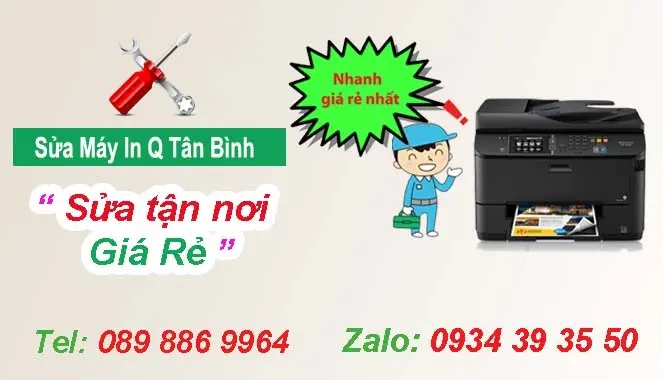
Dịch vụ Sửa máy in tại nhà quận Tân Bình – Chất lượng – Uy tín
Quý khách hàng cần tìm công ty chuyên sửa máy in tại quận tân bình uy tin - chất lượng, Hay cần dịch vụ sửa máy in tận nơi quận tân bình giá rẻ. Và Hi-tech là đơn vị chuyên bơm mực máy in, sửa máy in tại nhà ở quận tân bình, với đội ngũ kỹ thuật viên dông đảo, luôn lúc trực tại quận tân bình, có mặt nhanh nhất chỉ 20 phút
Tại quận Tân Bình chuyên sửa các lỗi máy in như
- Bản in ra bị đen mép vằn = hỏng trống, vỡ vòng nhựa.Dot
- Bản in ra bị vệt mờ đen dọc = do lỗi gạt, trống.
- Bản in ra bị vệt đen hình vặn thừng dọc trang = do lỗi gạt từ (gạt mực, gạt con).
- Bản in ra bị chấm đen các nhau 5cm- 7cm = do trống xước.
- Bản in ra bị chấm đen khoảng cách 3cm -4cm = trục từ có vết.
- Bản in ra bị chấm đen 3cm-4cm hoặc 5cm -7cm hình vảy ốc = do lô sấy thủng
- Bản in ra bị vạch ngang trang in có khoảng cách đều nhau hoặc thỉnh thoảng có trang bị = lỗi trục từ
- Bản in ra bị lớp mờ đen = do trục từ ẩm, lỗi gạt mực, mực bị ẩm.
- Bản in ra bị đen cả trang = do trục từ không tiếp điện.
- Bản in ra bị bong bóng như giọt nước rơi vào, thỉnh thoảng vạch ngang trên trang in = do hỏng trống.
- Bản in ra bị đen loang lổ = do trục từ tiếp điện không ổn định.
- Bản in ra mờ một vệt từ trên xuống độ rộng khoảng 2cm = hết mực
- Bản in ra mờ nghiêng = do trống kém.
- Bản in ra bị vạch mờ ngay trang giấy có khoảng cách đều = xem lại 2 đệm trục từ có bị rách không.
- Bản in ra lúc mờ lúc rõ = xem lại một số máy có đầu lò xo trục từ tiếp điện có tốt không.
- Khi in ra bản in chạy xuống dưới trống thì dừng lại = xem trống có quay không.
- Bản in ra trắng tinh giấy = không tiếp điện đầu trục từ, kiểm tra lò xo đầu trục từ.
- Khi in ra mực bị bong chữ = do chất lượng mực, hoạc lô sấy.
- Bản in ra dùng tay xoá được = xem lại lô sấy có bị giấy cuốn vào không, hoặc do chất lượng mực.
- Bản in mờ toàn trang = mực kém hoặc lỗi gạt từ, trống, có thể do hệ thống gương bẩn phải lau sạch.
- Nếu bản in bị lại chữ mà bản in vẫn sạch, khoảng cách lại chữ tương đương vòng trống do hỏng trục từ, hoặc do phần tiếp điện trục từ = thay trục từ hoặc kiểm tra phần tiếp địên trục từ.
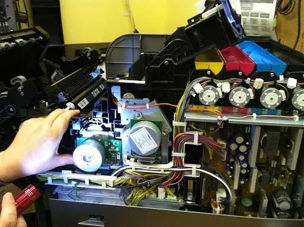
( Sửa máy in khu vực Tân Bình - Tân Phú )
Chính sách sửa chữa máy in tại nhà quận Tân Bình
- Sửa máy in tận nơi công ty - tại nhà khách hàng uy tín
- Hỗ trợ công nợ cuối tháng với các công ty, doanh nghiệp có nhu cầu
- Sửa máy in tận nơi có xuất hóa đơn vat đầy đủ
- Tư vấn hỗ trợ quý khách hàng sửa dụng máy in, mực in 24/7
- Hỗ trợ cài đặt máy in miễn phí qua teamviewer, zalo, điện thoại ....
Chiếc máy in ngày nay không thể thiếu trên bàn làm việc của mỗi văn phòng, thậm chí nó còn là một vật dụng cần thiết trong mỗi gia đình khi muốn in ấn tại nhà – tiện lợi – không tốn thời gian ra hàng photocopy để in ấn . Trước kia giá thành của nó khá cao nên để sở hữu được 1 cái máy in là điều rất khó khăn, khoa học công nghệ ngày càng phát triển công việc văn phòng ngày càng hướng đến sự nhanh chóng, tiện lợi điều đó càng làm tăng sự quan trọng của chiếc máy in.
Dịch vụ Sửa máy in tại nhà đã sinh ra từ đó, nhiều trung tâm và công ty thiết bị văn phòng đã được sinh ra để thực hiện sứ mệnh cao cả đó là : đảm bảo sự hoạt động cho tất cả các loại máy móc văn phòng trong đó có máy in, Bạn phải làm gì khi đang in ấn những văn bản, hợp đồng , báo cáo, luận văn…quan trọng thì máy in gặp sự cố, đó là lúc bạn cần đến dịch vụ sửa máy in tại nhà của chúng tôi.
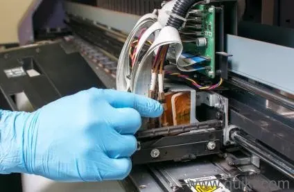
Đôi khi không chỉ là sửa máy in đó còn là trách nhiệm của mỗi kỹ thuật viên để hướng đến một dịch vụ tốt nhất cho mọi khách hàng kể cả những khách hàng khó tính nhất, Nếu gặp sự cố với chiếc máy in hoặc máy tính đừng ngần ngại hãy cầm điện thoại và gọi ngay cho chúng tôi, tổng đài của chúng tôi luôn sẵn sàng tư vấn miễn phí cho quý khách, đưa ra các phương án tối ưu nhất về kỹ thuật cho khách hàng.
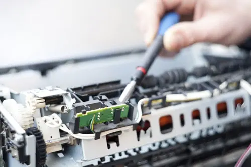
Kỹ thuật viên của công ty Hi-Tech luôn đảm bảo sửa được tất cả các dòng máy có trên thị trường hiện nay, máy in có rất nhiều hãng sản xuất khác nhau, mỗi hãng cho ra một loạt các seri máy khác nhau phù hợp với túi tiền và mục đích sử dụng của người tiêu dùng. Do vậy nhân viên luôn phải update kiến thức sửa chữa máy in hàng ngày sao cho theo kịp những sản phẩm mới nhất của các nhà sản xuất máy in, Linh kiện thay thế với các dòng máy đôi khi cũng trở thành khó khăn với những kỹ thuật chỉ muốn thay thế mà không muốn sửa chữa, bởi các hãng sản xuất máy in chưa chắc đã có đồ thay thế. Sau đây là hình ảnh một số hãng máy in nổi tiếng như : Canon, HP, Samsung, Brother, Panasonic…
Sửa máy in tại nhà Áp dụng cho một số dòng máy in sau
Sửa Máy in laser : gồm có máy in laser đen trắng và máy in laser màu
Sửa Máy in phun màu những hãng nổi tiếng phải kể đến như : EPSON, CANON…
Sửa Máy in Kim : sửa chữa và thay thế các linh kiện máy in kim như đầu kim, lô kéo giấy, khay giấy…
Sửa máy photocopy : Ricoh, Toshiba… sự cố thường gặp tương tự máy in.
Quy trình sửa máy in quận tân bình của Hi-Tech như sau:
Công ty sẽ đưa ra một số bước cơ bản để dẫn đến một quy trình sửa máy in tổng quát nhất, giúp khách hàng và kỹ thuật có thể lựa chọn những phương án phù hợp nhất để tiến hành.
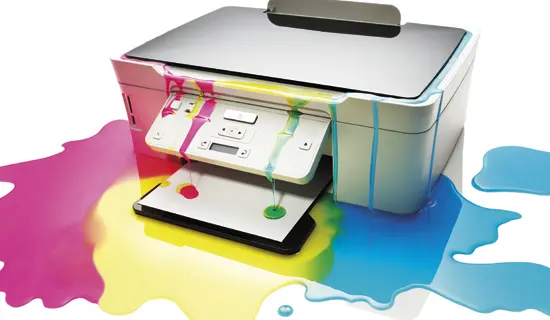
- Phương án 1 : Hỗ trợ miễn phí
- Sửa máy in tại Tân Bình miễn phí theo các nội dung bên dưới đây !
- Khi khách hàng gặp phải những lỗi máy in sơ đẳng nhất với kỹ thuật nhưng lại khó với người mới sử dụng máy in, chẳng hạn như lỗi kết nối, in qua mạng Lan, không biết in đảo mặt, không biết chọn khay giấy A5, không biết cài đặt máy in qua wifi, in qua điện thoại… Các lỗi cơ bản này sẽ được Mực in Tây Hồ khắc phục như sau.
- Hướng dẫn khách hàng xử lý trực tiếp qua điện thoại : các thao tác sẽ được hướng dẫn từng bước để khách hàng kịp theo dõi và ghi nhớ. Để lần sau gặp phải có thể khắc phục được ngay mà không cần gọi kỹ thuật.
- Nếu khách hàng nghe hướng dẫn và tự sửa được lỗi máy in của mình thì chúng tôi sẽ không tính phí ( hoàn toàn miễn phí ) tiết kiệm tối đa về thời gian cũng như chi phí văn phòng. Chúng tôi chỉ mong một lời tks là quá đủ
- Khi khách hàng không tự sửa được qua hướng dẫn bằng điện thoại : Nhân viên kỹ thuật sẽ hỗ trợ khách hàng kiểm tra lỗi trực tuyến qua phần mềm support Teamviewer. Quý khách chỉ cần cài phần mềm và đọc cho chúng tôi Your ID và Password sẽ có nhân viên tiến hành kiểm tra hỗ trợ cài đặt, sửa chữa các lỗi cơ bản về máy in. Và hoàn toàn miễn phí !
- Trong trường hợp kỹ thuật support máy in của Hi-Tech không thể hỗ trợ hoặc máy in bị hõng hóc nặng, Hi-tech sẻ có kỹ thuật đến sửa máy in tại nhà quận tân bình cho quý khách hàng
- Phương án 2 : Sửa chữa tính phí tại nhà
- Ở phương án này thì quý khách sẽ phải trả phí nếu muốn sử dụng dịch vụ sửa máy in tân bình của công ty Hi-tech, bởi vì chúng ta đã không thành công ở phương án 1 cụ thể như sau
- Nhân viên kỹ thuật sẽ tới nhà hoặc công ty của quý khách để kiểm tra tình hình thực tế để đưa ra kết luận hiện trang của máy in bị hỏng hóc ra sao. Báo cho người sử dụng biết để có phương án sửa chữa !
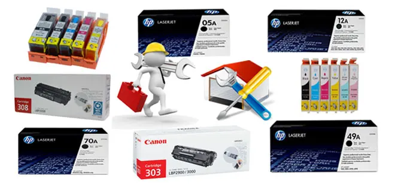
- Trường hợp máy in bị hỏng nhẹ hoặc chỉ bị các lỗi nhỏ đơn thuần nhưng kỹ thuật viên đã cất công đến chúng tôi sẽ tính chi phí đi lại và xăng xe thường là 50k. Ví dụ : Sau khi kiểm tra máy thiếu driver chỉ cần cài lại, hay máy in bị kẹt giấy chỉ cần kéo tờ giấy ra là xong hoặc chia sẻ máy in… thực hiện chưa đầy 5 phút đã ok.
- sửa máy in tại nhà ở quận tân bình với máy bị hỏng liên quan đến hộp mực ( rất hay gặp ) Nhân viên sẽ tư vấn thay thế mực in, linh kiện hao mòn cần thay thế như : trống, gạt, trục từ, trục cao áp….linh kiện nào bị hỏng sẽ tư vấn thay linh kiện đó tránh trường hợp thay thế tràn lan gây tốn kém tiền bạc mà không hiệu quả. Những linh kiện đặc thù phải đặt hàng kỹ thuật viên sẽ có trách nhiệm đàm phán với KH ( khách hàng ) hẹn thời gian thay thế gần nhất.
- Ví dụ : Khách hàng báo sai tên máy dẫn đến kỹ thuật mang sai linh kiện không đúng chủng loại cần thay, linh kiện không có sẵn trên thị trường ( thay thế bằng linh kiện tháo máy )….
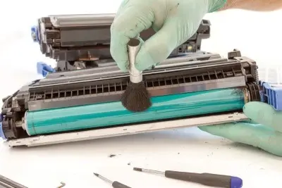
- Kỹ thuật viên trước khi sửa chữa sẽ thông báo tình trạng, vật tư cần thay thế, báo giá chính xác nhất cho khách hàng, nếu đồng ý với mức giá đề ra chúng tôi sẽ tiến hành sửa chữa, thay thế…Nếu KH không đồng ý chúng tôi sẽ thu phí kiểm tra máy bằng chi phí xăng xe đi lại thường là năm chục ngàn.
- Sau khi sửa xong nhân viên sẽ bảo trì , bảo dưỡng máy, tra dầu mỡ, vệ sinh sạch sẽ miễn phí sau đó in test lần cuối trước khi kí biên bản bàn giao máy cho KH. Chú ý biên bản bàn giao chính là phiếu bảo hành KH nên giữ lại phiếu để tiện đối chiếu khi máy gặp sự cố ngay sau khi Sửa máy in tại nhà.
Phương án 3 : Mang máy in về sửa
- Nếu gặp phải lỗi máy in không thể sửa tại nhà KH được ví dụ : bánh răng bị vỡ, trục truyền động bị gãy, hỏng card in, cháy nguồn, chết ECU, Hỏng hộp quang…Và một số lỗi khác cần đến những công cụ hỗ trợ để sửa mạch, đọc đạc nguồn, tín hiệu., linh kiện thay thế không có sẵn, khó kiếm. Lúc này kỹ thuật sẽ xin khách hàng mang máy về sửa nếu được sự đồng ý từ phía KH nhân viên sẽ thực hiện các bước sau để mang máy in về sửa.
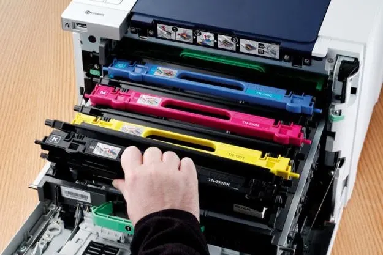
- Kiểm tra đúng lỗi ( tất cả các lỗi ) tránh trường hợp phát sinh các lỗi sau khi báo cho khách hàng tình trạng máy
- Báo giá cho KH trước khi nhận máy về sửa, nếu cần cho khách hàng mượn máy để in free !
- Viết giấy biên nhận mang máy in về sửa ( mỗi bên giữ một bản có dấu đỏ công ty, chữ kí của kỹ thuật và KH )
- Dán tem và yêu cầu khách hàng kí tên vào các bộ phận quan trọng của máy in như : card, hộp quang, hộp mực, nguồn..
- Hẹn thời gian trả máy cho KH, địa điểm trả máy…sau khi sửa xong
- Trong trường hợp không sửa được sẽ báo ngay để KH chủ động công việc. Tư vấn khách hàng mua máy mới hoặc máy cũ với chức năng tương tự phù hợp với công việc của KH. giá thành vừa túi tiền.
- Hoàn thành phương án 3 trong gói dịch vụ sửa chữa máy in quận tân bình
Một số lỗi máy in thường gặp khi sửa máy in tại nhà
Trong quá trình đổ mực máy in hoặc sửa máy in tại nhà quận tân bình kỹ thuật rất hay gặp phải 2 tình huống hỏng hóc cơ bản nhất. Những chia sẻ dưới đây sẽ phần nào giúp đỡ được một số kỹ thuật hoặc người dùng có thể tự sửa máy in của mình.
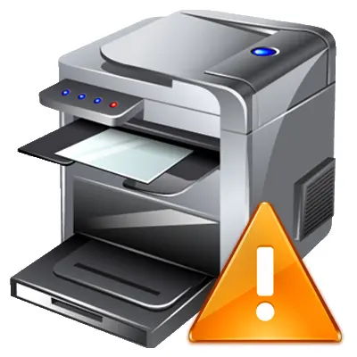
Lỗi phát sinh trong quá trình đổ mực ( do hộp mực )
Sửa máy in với các lỗi như sau : Bản in bị đen, trắng, mờ, vệt đen, bị chảy mực vào máy, tắc đầu phun…tất cả các nguyên nhân trên đa phần do hộp mực hoặc đầu in, quý vị có thể tham khảo bài viết dưới đây để xem chi tiết.
THAM KHẢO : Các lỗi thường gặp khi đổ mực máy in
Lỗi phát sinh trong quá trình sử dụng ( do máy in )
Khi sử dụng máy in có thể phát sinh một số lỗi do người dùng hoặc do máy hoạt động quá mức dẫn đến hỏng hóc như : lụa sấy bị rách, lô ép, bạc lô ép bị mòn, bánh răng bị vỡ, card in bị die, dây curoa hoặc motor chết, không kéo giấy, kéo giấy liên tục, bật máy lên là kéo giấy… Các lỗi này yêu cầu phải có trình độ chuyên môn về máy in thì mới có thể phát hiện và sửa chữa.
Thêm một số lỗi khác như : Lỗi E000007, E000000, Lỗi Call services 1, Call services 2, 3, 6, 17… Lỗi Replace drum, Replace tonner, Tonner Exhauts, error printer spooler service is not running,
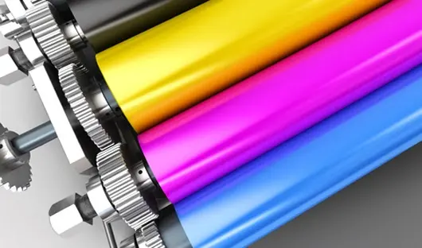
Hãy liên hệ ngay với chúng tối để những kỹ thuật viên chuyên Sửa máy in tại nhà Hà Nội sẽ hỗ trợ nhiệt tình nhất có thể, đã có rất nhiều các bạn bè anh em kỹ thuật xa gần liên hệ với Mực in Tây Hồ để được tư vấn về kỹ thuật, trao đổi mua bán linh kiện chính hãng, linh kiện tháo máy, và các loại vật tư ngành in khác.
Xem Thêm : Nap muc may in tai quan tan binh
Bảng giá sửa chữa máy in tại quận tân bình
Trong quá trình sửa máy in tại quận tân bình rất hay phải thay thế linh kiện như : Trống , gạt, trục cao áp, trục từ…tất cả các linh kiện của hộp mực đều mang tính chất hao mòn sau nhiều lần đổ mực in ấn, đến thời điểm hộp mực xuống cấp sẽ gây ra hỏng hóc không đáng có. Nên thay thế khi thấy hiện tượng hỏng, tránh ảnh hưởng tới bộ phận khác, dưới đây là bảng giá một số loại linh kiện thường gặp.
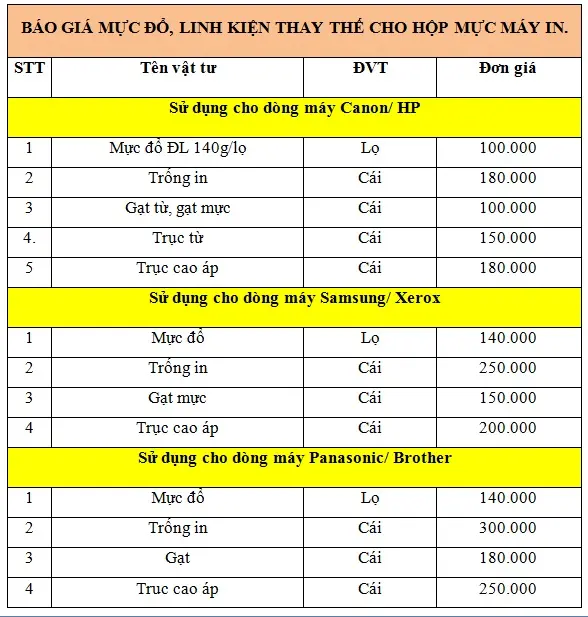
Báo giá chỉ mang tính tham khảo để biết báo giá chi tiết cho từng loại máy in và linh kiện khác như : bánh răng, hộp quang, card in, motor, lụa sấy, bạc ép, lô ép…mỗi chủng loại sẽ có giá khác nhau tùy vào mức độ phổ biến của linh kiện.
Xem thêm chi nhánh : sửa máy in quận 10
Quy trình sửa máy in quận Tân Bình
B1 - Kỹ thuật viên kiểm tra tình trạng máy in của khách hàng.
B2 - Xác định lỗi và đưa ra hướng khắc phục
B3 - Báo giá sửa máy in
B4 -Tiến hành sửa chữa máy in khi khách hàng đồng ý
B5 - Sau khi sửa chữa, kiểm tra lại tình trạng máy
B6 - Test lại cùng với khách hàng là đã khắc phục hết lỗi
B7 - Giao máy cho khách và viết giấy bảo hành
Các chi nhánh sửa máy in tại nhà của Hi-Tech
- Sửa máy in quận 1
- Sửa máy in Quận 3
- Sửa máy in quận 5
- Sửa máy in quận 10
- Sửa máy in quận tân phú